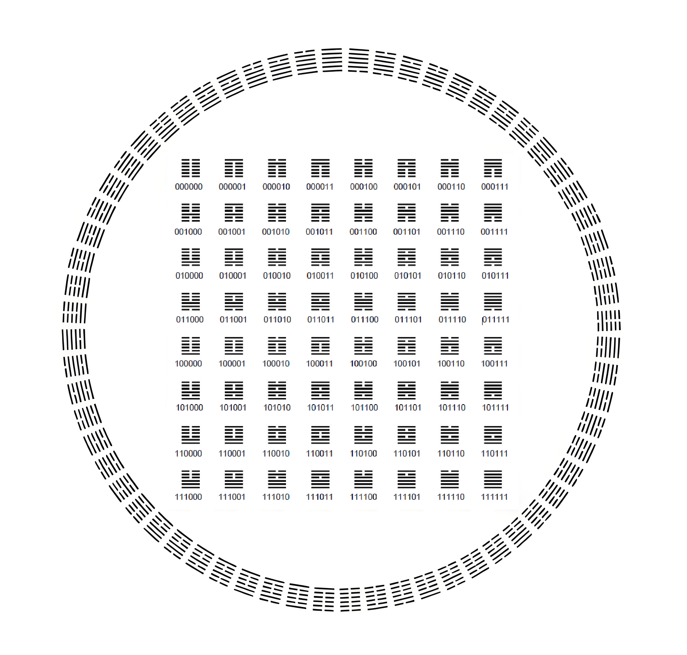

我们是谁 Who We Are
易经文明研究院是一个以《周易》为核心的学术研究平台，致力于从经典出发，探讨法律、制度与文明的基本问题。
本机构以跨学科与跨文明视野，推动对《周易》的文本、思想及其当代意义的系统研究。
The I Ching Civilization Institute is an academic platform dedicated to the study of the I Ching as a foundational text for understanding law, institutions, and civilization.
It promotes interdisciplinary and cross-civilizational research on the textual, philosophical, and contemporary significance of the I Ching.
我们的使命 Our Mission
本机构的使命是促进文化的复兴与制度的转型。
Its mission is to advance cultural renewal and institutional transformation.
最新出版
New Publications
最新出版 New Publications
首页以出版矩阵方式展示最新期刊、专书、工作论文与译介成果，布局参照机构型出版站的栏目首页。 The homepage presents recent journals, books, working papers, and translation projects in a publication matrix modeled on editorial institutional sites.
KUN RIGHTS
Article PDF
论《周易》坤卦的权利思想 On the Concept of Rights in the Kun Hexagram of the I Ching
论文 PDF，围绕坤卦中的权利思想展开讨论。
PDF article on the idea of rights as interpreted through the Kun hexagram.
阅读论文 Read PDF《周易》坎离两卦中的殷周故事 Shang-Zhou Narratives in the Kan and Li Hexagrams of the I Ching
论文 PDF，讨论坎离两卦中所包含的殷周历史叙事。
PDF article on Shang and Zhou narratives embedded in the Kan and Li hexagrams.
阅读论文 Read PDF
LOSS & GAIN
Article PDF
《周易》损益之道与威尔逊执政 The Way of Loss and Gain in the I Ching and the Wilson Administration
论文 PDF，从损益之道出发讨论威尔逊执政。
PDF article relating the logic of loss and gain in the I Ching to the Wilson administration.
阅读论文 Read PDF
TAI & PI
Article PDF
《周易》泰否之道与西方民主之路 The Way of Tai and Pi in the I Ching and the Path of Western Democracy
论文 PDF，讨论泰否之道与西方民主发展之间的关系。
PDF article connecting the Tai/Pi dynamic of the I Ching to the development of Western democracy.
阅读论文 Read PDF周易天义（部分） Heavenly Principles of the I Ching (Excerpt)
专著节选 PDF。
Excerpt PDF from the monograph Heavenly Principles of the I Ching.
阅读专著 Read PDF
CULTURAL VENUES
Book Excerpt
文化场所管理的比较法研究（部分） A Comparative Law Study of Cultural Venue Management (Excerpt)
专著节选 PDF。
Excerpt PDF from a comparative-law study of cultural venue management.
阅读专著 Read PDF
即将举行
Upcoming Events
近期活动 Upcoming Events
2026 年 5 月将举办连续三场学术讲座，围绕《周易》文本形成、身心结构与文明秩序展开系统讨论。 In May 2026, the Institute will host a three-part seminar series on textual formation, psycho-structural interpretation, and civilizational order in the I Ching.
MAY
06
2026
出土文献视野下的《周易》文本形成与结构演变 The Formation and Structural Evolution of the I Ching in Light of Excavated Texts
从战国简帛与汉代出土文献出发，重新审视《周易》文本的形成机制与结构演变过程。
A re-examination of the formation of the I Ching through Warring States and Han excavated manuscripts, with emphasis on textual layering and structural development.
查看讲座详情 View Lecture Details
MAY
13
2026
从《黄帝内经》到荣格心理学：《周易》的身心结构与跨文化解释 From the Huangdi Neijing to Jungian Psychology: The Psycho-Structural Interpretation of the I Ching
结合《黄帝内经》的系统思维与荣格分析心理学，讨论《周易》如何进入身心结构分析与跨文化解释框架。
An exploration of the I Ching through the system-oriented worldview of the Huangdi Neijing and Jungian analytical psychology.
查看讲座详情 View Lecture Details
MAY
20
2026
经典解释、法律思想与文明秩序：从《圣经》到《周易》的比较研究 Classical Interpretation, Legal Thought, and Civilizational Order: A Comparative Study from the Bible to the I Ching
比较《圣经》传统与《周易》解释体系在文明秩序建构中的不同路径，讨论经典文本如何参与法律与伦理秩序生成。
A comparative study of biblical and I Ching interpretive traditions, focusing on their roles in legal, ethical, and civilizational order.
查看讲座详情 View Lecture Details